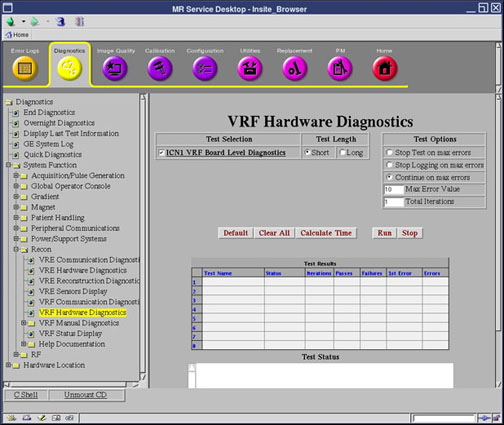

Operating Documentation
Direction 5670000, Rev# 1
Optima MR450w 1.5T Service Methods
Module Version 3.0, Version Date 8/19/08
Operating Documentation |
Diagnostics >> System Function >> Recon >> VRF Hardware Diagnostics
Diagnostics >> Hardware Location >> PGR Cabinet >> Recon >> VRF Hardware Diagnostics
Illustration 1: VRF Hardware Diagnostics

The purpose of the ICN VRF Board Level Diagnostics is to test the VRF board hardware.
VRF SRAM
DMA engine
Filters
Registers
VRF to IRF interrupt capability
If the RRX is not working properly, or if unsure about the RRX status, before executing the VRF Hardware Diagnostics, please apply dual fiber optic service loopback connector to replace product cable and prevent interference from the RRX.
| NOTE: | If this is a 32-channel system, use the ICN Identification tool from the Common Service Desktop (Utilities >> Toolbox >> VRE >> ICN Identification) to help distinguish ICN1 from ICN2. |
Select ICN VRF Board Level Diagnostics from the VRF Hardware Diagnostics screen.
Click [Run].
Ensure that the hardware passes the diagnostic by reviewing the status in the Test Results table.
| NOTE: | If the test fails, note the approximate time. This time is needed to identify the time stamp suffix of the result file. |
This diagnostic has a passed or failed status. If the diagnostic has failed, please review the error log and corresponding extended error messages for subsequent actions. A failed status does not mean that the VRF is bad. Follow the error message to isolate the fault of the VRF hardware or other processes external to the VRF.